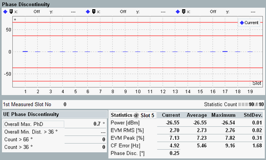
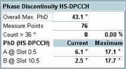

The phase discontinuity is displayed in a bar graph and as statistical data.

The bar graph of a full-slot measurement shows the phase discontinuity at up to 119 slot boundaries. The bar graph of a half-slot measurement shows the phase discontinuity at the boundaries between first and second half-slot of up to 120 slots.
Below the bar graph two tables display statistical data. The table to the left is directly related to the limits. The applicable limits depend on the measurement period. Different data is displayed for half-slot measurements (used to measure signals with HSPA channels) and full-slot measurements (used to measure signals without HSPA channels). Both table versions are described below.
See also parameter "Measurement Period" and "Transmit Modulation Limits"
- Overall maximum phase discontinuity since the start of the measurement
- Overall minimum distance > 36°: Minimum slot distance (since the start of the measurement) between phase discontinuity results exceeding the dynamic limit
- Count > 66°: Number of phase discontinuity results exceeding the upper limit. The value 66° is the default upper limit. If the upper limit has been modified, the new value is displayed instead.
- Count > 36°: Number of phase discontinuity results exceeding the dynamic limit. The value 36° is the default dynamic limit. If the dynamic limit has been modified, the new value is displayed instead.
The values 36° and 66° are administrable limits.
The following data is displayed instead of the UE phase discontinuity.

- Overall maximum phase discontinuity since the start of the measurement
- Measure points: number of points (A + B) measured since the start of the measurement
- Count > 36°: Number of phase discontinuity results exceeding the limit. All results measured at point A or B are considered. The count is indicated as absolute number and as percentage of the measure points. The value 36° is the default limit value. If the limit has been modified, the new value is displayed instead.
- Phase discontinuity at point A and point B. "Current" shows the result obtained in the last measurement interval while "Maximum" refers to the largest "Current" value since the start of the measurement.
Phase discontinuity is the change in phase between two adjacent timeslots. The phase discontinuity is measured in accordance with the definition of the conformance test specification 3GPP TS 34.121: For full-slot measurements (no HSPA channels):
For configurations with HSPA channels, a timing offset of one half-slot between a DPCCH timeslot and an HS-DPCCH timeslot is required (according to 3GPP TS 34.121). Thus the HS-DPCCH slot boundaries are at the middle of the DPCCH timeslots, between the first and second half-slot:
|
For additional information, refer to "Common View Elements".